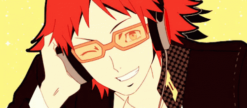

Aquilla 8A
Yosuke Hanamura is the protagonist's best friend who's a second year in Yasomagi High School and also a city boy! The reason for him moving to Inaba (a small town in Japan) is because his father was transferred to manage a local department called Junes, and he's been living at Inaba around 6 months before Yu Narukami (protagonist) arrived. When you first met Yosuke Hanamura, he was all outgoing and clumsy, making his personality that of the cheerful class clown at first sight.
Though that's what we believed his personality was until we met his Shadow Side. Yosuke has a crush on a beautiful girl named Saki Konishi who's a third year and works at his dad's department store (Junes), so they tend to hangout around their break times. Yosuke is head over heels for her and even asked her out to watch the new movie out in the cinema.


His Shadow Side revealed that Yosuke Hanamura's cheerful, outgoing personality was just an act to cope with his feelings of being lonely in a small town. It also revealed his resentment towards his family's business and the boring tiny town he's now forced to live in. The Shadow Side represents his frustration at the lack of excitement and entertainment there is in Inaba. To cope with his overwhelming feelings, he acts all happy and cheerful to give himself a sense of worth of living, something to label him as "special" and not "Junes's son". At first Yosuke kept on denying that side of him, which made the shadow side grow stronger. You, as the protagonist, try defeating Yosuke's Shadow Side and convincing him to accept that side of himself. As Yosuke gets back on his feet after fainting from the Shadow Side attack, he is finally able to build up the courage to confront himself and accept that side of him, even if he wish that side of him was just fiction. From this, he unlocks his persona named Jiraiya. His persona represents Yosuke's aspiration to be a dynamic, important person and overcome his insecurities.